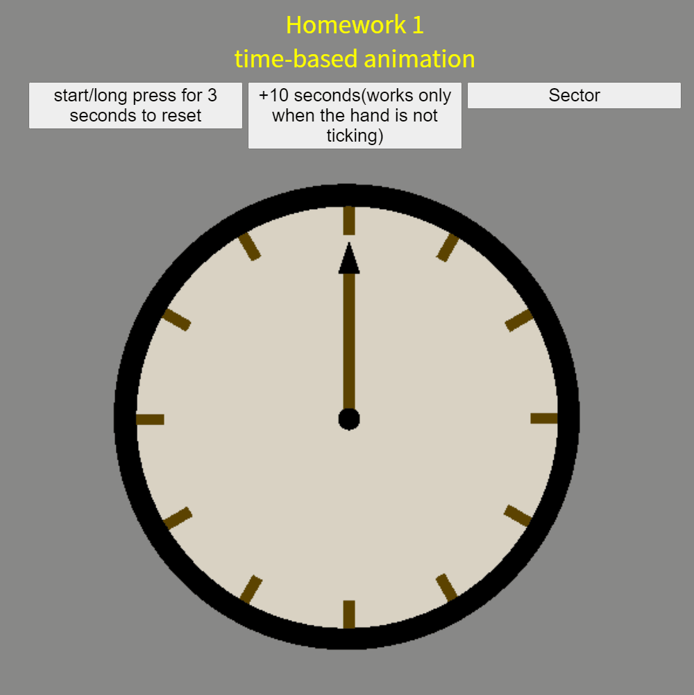
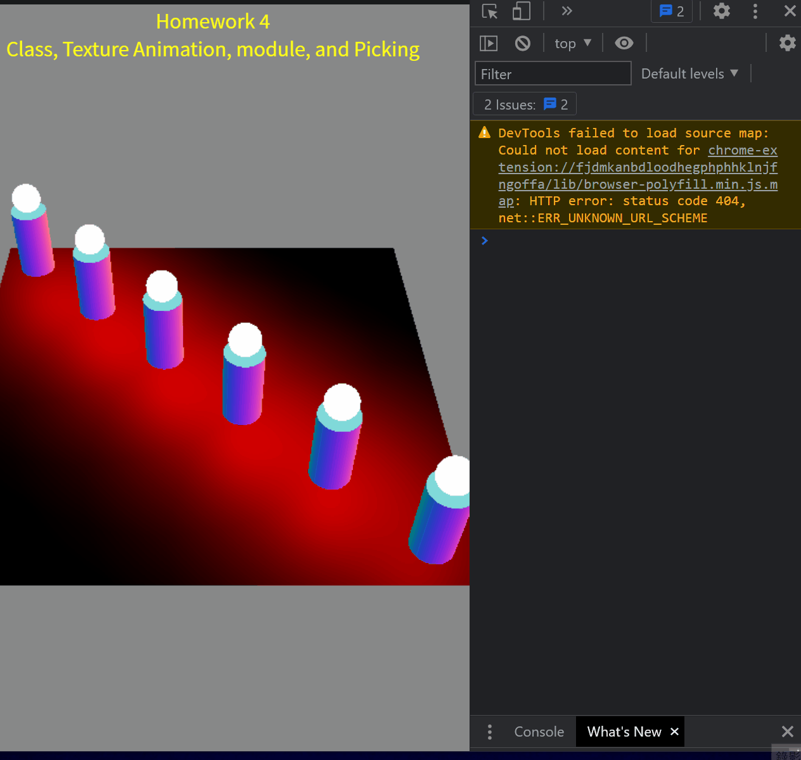

|
 |  |
| hw0.html github.com, README.md |
hw1.html time-based animation |
hw2.html Dynamic Drive, Rectangle-Circle Intersection, Dual Viewports |
 |
 |  |
| hw3.html Modeling, Multiple Viewports |
hw4.html Class, Texture Animation, module, and Picking |
hw5 ver1.html Shader, Render-to-texture, module |
 |
||
| hw5 ver2.html Shader, Render-to-texture, module |